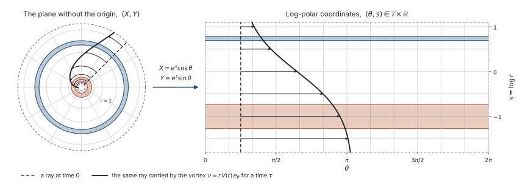

Couette flow
The Couette flow is the linear shear \(u=(y,0)\), considered here in the simplest possible domain for this problem, \((x,y)\in\mathbb{T}\times\mathbb{R}\). The equation under study then reduces to \[\partial_t f+y\partial_xf=\nu\Delta f, \qquad f|_{t=0}=f^{\rm in}, \qquad (x,y)\in \mathbb{T}\times\mathbb{R}.\] This is a foundational model in the field, because the same equation governs the vorticity of the two-dimensional Navier–Stokes equations linearized around the Couette flow. In that context Kelvin already solved it explicitly in 1887 (see Kelvin (1887, eq. (34)–(35)) and History of the problem).
We use this model to illustrate what typical mixing and enhanced dissipation results look like, and how the two are related. The model is simple enough that each proof technique can be carried out in full. They are all presented below on this single example.
The domain \(\mathbb{T}\times\mathbb{R}\) is mathematically convenient: there are no boundaries, and one can take the Fourier transform in both variables.
There is also a more geometric motivation. Consider a circular flow in the plane, \(u=rV(r)e_\theta\), for which the equation reads \(\partial_tf+V(r)\partial_\theta f=\nu\Delta f\). The log-polar coordinates \(X=e^s\cos(\theta)\), \(Y=e^s\sin(\theta)\) identify \(\mathbb{R}^2\setminus\{0\}\) with \((\theta,s)\in\mathbb{T}\times\mathbb{R}\), as shown in the figure below.

Left: the plane, with two annuli of the same width and a ray (dashed) carried by a circular flow for some time (solid). Right: the same picture in log-polar coordinates. The annuli become strips, and the circular flow becomes a shear flow.
Note that this is a conformal change of variables, so the Laplacian only gains a scalar factor, and the equation becomes \[\partial_t f+V(e^s)\partial_\theta f=\nu e^{-2s}(\partial_\theta^2+\partial_s^2)f,\qquad (\theta,s)\in\mathbb{T}\times\mathbb{R}.\] If we localize near a radius \(r_0=e^{s_0}\) where \(V'(r_0)\neq0\), then to leading order, and up to constants, we recover the equation for the Couette flow. In this sense, the Couette flow can be seen as a first local approximation of a radial vortex in \(\mathbb{R}^2\), in a region where the angular velocity is strictly monotone. Below is a video showing the effect of the conformal mapping.
Left: a scalar transported and diffused by the circular flow with \(V(r)=1/(1+r^2)\). Right: the same solution in log-polar coordinates, where the flow is a shear flow.
The result
Theorem 1 (enhanced dissipation for Couette flow)
The statement.
The key mechanism in a few lines.
Notation and setting
The flow \(u=(y,0)\) on \(\mathbb{T}\times\mathbb{R}\): the equation, the Fourier modes, what decays.
One example, every technique
Each proof below is written for this example only, to show the mechanism; the general results, with complete proofs, are in the part Techniques and general results.
Explicit solution
Spectral methods
General theory: Spectral methods.
Hypocoercivity
General theory: Hypocoercivity.
Stochastic methods
General theory: Stochastic methods.
Hörmander theory
General theory: Hörmander theory.
What this example teaches
What the example shows, and what the general theory keeps of it.
References
- W. Thomson (Lord Kelvin), Stability of fluid motion: rectilineal motion of viscous fluid between two parallel planes, Philosophical Magazine (5) 24 (1887), 188–196, doi:10.1080/14786448708628078.